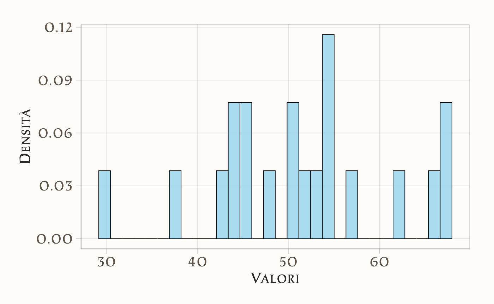

here::here("code", "_common.R") |>
source()
# Load packages
if (!requireNamespace("pacman")) install.packages("pacman")
pacman::p_load(cmdstanr, posterior, bayestestR)64 Intervalli di fiducia
In questo capitolo imparerai a
- sapere calcolare e interpretare gli intervalli di fiducia frequentisti.
Prerequisiti
- Leggere il capitolo Estimation, Confidence Intervals, and Bootstrapping di Statistical Inference via Data Science: A ModernDive into R and the Tidyverse (Second Edition).
- Leggere il capitolo Sampling Distributions of Estimators (Schervish & DeGroot, 2014).
Preparazione del Notebook
64.1 Introduzione
Gli intervalli di confidenza sono uno strumento fondamentale nell’inferenza statistica frequentista. Essi consentono di stimare un parametro sconosciuto di una popolazione, come la media \(\mu\), tenendo conto dell’incertezza derivante dal fatto che la stima si basa su un campione. Questo materiale didattico si propone di spiegare in modo dettagliato e chiaro la costruzione di un intervallo di confidenza per la media di una popolazione, sia nel caso di varianza nota sia in quello di varianza incognita.
64.2 Inferenza Statistica Frequentista e Media Campionaria
Quando estraiamo un campione casuale semplice \(X_1, X_2, \dots, X_n\) da una popolazione con media \(\mu\) e varianza \(\sigma^2\), la media campionaria \(\bar{X}\) è definita come:
\[ \bar{X} = \frac{1}{n} \sum_{i=1}^n X_i. \]
La media campionaria \(\bar{X}\) è una variabile casuale perché dipende dai valori osservati nel campione, che sono essi stessi casuali. Le proprietà della media campionaria sono le seguenti:
- Media della distribuzione campionaria: \(E[\bar{X}] = \mu\). La media campionaria è uno stimatore non distorto della media della popolazione.
- Varianza della distribuzione campionaria: \(\text{Var}(\bar{X}) = \frac{\sigma^2}{n}\). Questo significa che la precisione di \(\bar{X}\) come stima di \(\mu\) aumenta con il numero di osservazioni \(n\).
Queste proprietà sono fondamentali per calcolare un intervallo di confidenza, poiché ci permettono di descrivere la distribuzione di \(\bar{X}\).
64.3 Intervallo di Confidenza per la Media: Caso di Varianza Nota
Supponiamo che la popolazione sia distribuita normalmente con media \(\mu\) e varianza \(\sigma^2\), e che \(\sigma^2\) sia nota. La distribuzione della media campionaria \(\bar{X}\) è anch’essa normale:
\[ \bar{X} \sim \mathcal{N}\left(\mu, \frac{\sigma^2}{n}\right). \]
64.3.1 Passo 1: Standardizzazione della Media Campionaria
Per lavorare con una distribuzione normale standard (media 0 e varianza 1), standardizziamo \(\bar{X}\) utilizzando la formula:
\[ Z = \frac{\bar{X} - \mu}{\sigma / \sqrt{n}}. \]
Qui, \(\sigma / \sqrt{n}\) è la deviazione standard della distribuzione campionaria di \(\bar{X}\).
Dopo questa trasformazione, la variabile \(Z\) segue una distribuzione normale standard:
\[ Z \sim \mathcal{N}(0, 1). \]
64.3.2 Passo 2: Determinazione del Livello di Confidenza
Scegliamo un livello di confidenza \(\gamma\), ad esempio \(\gamma = 0.95\). Per una distribuzione normale standard, troviamo il valore critico \(z\) tale che la probabilità tra \(-z\) e \(+z\) sia pari al livello di confidenza:
\[ P(-z \leq Z \leq z) = \gamma. \]
Per un livello di confidenza del 95%, \(z \approx 1.96\).
64.3.3 Passo 3: Formulazione dell’Intervallo di Confidenza
Partiamo dalla probabilità per \(Z\):
\[ P(-z \leq Z \leq z) = \gamma. \]
Sostituiamo la definizione di \(Z\):
\[ P\left(-z \leq \frac{\bar{X} - \mu}{\sigma / \sqrt{n}} \leq z\right) = \gamma. \]
Moltiplichiamo tutti i membri per \(\sigma / \sqrt{n}\) per rimuovere il denominatore:
\[ P\left(-z \cdot \frac{\sigma}{\sqrt{n}} \leq \bar{X} - \mu \leq z \cdot \frac{\sigma}{\sqrt{n}}\right) = \gamma. \]
Aggiungiamo \(\mu\) a tutti i membri per isolare \(\mu\):
\[ P\left(\bar{X} - z \cdot \frac{\sigma}{\sqrt{n}} \leq \mu \leq \bar{X} + z \cdot \frac{\sigma}{\sqrt{n}}\right) = \gamma. \]
64.3.4 Passo 4: Limiti dell’Intervallo di Confidenza
Definiamo i limiti inferiore e superiore dell’intervallo di confidenza:
\[ \hat{a} = \bar{X} - z \cdot \frac{\sigma}{\sqrt{n}}, \quad \hat{b} = \bar{X} + z \cdot \frac{\sigma}{\sqrt{n}}. \]
L’intervallo di confidenza per \(\mu\) è quindi:
\[ (\hat{a}, \hat{b}) = \left(\bar{X} - z \cdot \frac{\sigma}{\sqrt{n}}, \bar{X} + z \cdot \frac{\sigma}{\sqrt{n}}\right). \]
64.4 Intervallo di Confidenza per la Media: Caso di Varianza Incognita
Nella maggior parte dei casi pratici, la varianza \(\sigma^2\) non è nota. In questi casi, stimiamo \(\sigma\) con la deviazione standard campionaria \(s\) e utilizziamo la distribuzione t di Student, che tiene conto dell’incertezza aggiuntiva.
64.4.1 Passo 1: Distribuzione t di Student
La statistica che seguiamo è:
\[ T = \frac{\bar{X} - \mu}{s / \sqrt{n}}, \]
dove \(T\) segue una distribuzione t con \(n-1\) gradi di libertà.
64.4.2 Passo 2: Costruzione dell’Intervallo di Confidenza
Analogamente al caso precedente, costruiamo l’intervallo partendo da:
\[ P(-t^\ast \leq T \leq t^\ast) = \gamma, \]
dove \(t^\ast\) è il valore critico della distribuzione t per il livello di confidenza \(\gamma\) e \(n-1\) gradi di libertà.
Sostituendo \(T\):
\[ P\left(-t^\ast \leq \frac{\bar{X} - \mu}{s / \sqrt{n}} \leq t^\ast\right) = \gamma. \]
Moltiplichiamo per \(s / \sqrt{n}\):
\[ P\left(-t^\ast \cdot \frac{s}{\sqrt{n}} \leq \bar{X} - \mu \leq t^\ast \cdot \frac{s}{\sqrt{n}}\right) = \gamma. \]
Aggiungiamo \(\mu\):
\[ P\left(\bar{X} - t^\ast \cdot \frac{s}{\sqrt{n}} \leq \mu \leq \bar{X} + t^\ast \cdot \frac{s}{\sqrt{n}}\right) = \gamma. \]
64.4.3 Passo 3: Limiti dell’Intervallo
I limiti dell’intervallo sono:
\[ \hat{a} = \bar{X} - t^\ast \cdot \frac{s}{\sqrt{n}}, \quad \hat{b} = \bar{X} + t^\ast \cdot \frac{s}{\sqrt{n}}. \]
In conclusione, gli intervalli di confidenza forniscono un modo per quantificare l’incertezza nelle stime di parametri sconosciuti. La loro costruzione dipende dalla distribuzione campionaria dello stimatore e dall’informazione disponibile sulla varianza.
64.4.4 Applicabilità e Limitazioni
- Il metodo presuppone che la popolazione segua una distribuzione normale e è valido anche per campioni di piccole dimensioni (ad esempio, \(n < 30\)) prelevati da tale popolazione.
- Se la popolazione non è normalmente distribuita e la dimensione del campione è ridotta, questo metodo potrebbe non essere idoneo.
- Tuttavia, per campioni di grandi dimensioni (\(n \geq 30\)), questo approccio rimane valido per la stima dell’intervallo di confidenza grazie al teorema del limite centrale, che si applica anche a popolazioni con distribuzioni non normali.
64.5 Livello di Copertura
Per interpretare correttamente gli intervalli di fiducia è fondamentale considerare il concetto di “livello di copertura”. Questo livello indica la frequenza con cui l’intervallo di fiducia include il valore reale del parametro della popolazione, in una serie di esperimenti ripetuti.
Esempio di Livello di Copertura:
- Se il livello di copertura è del 95%, significa che, nel lungo periodo, il 95% degli intervalli di fiducia costruiti conterrà il valore vero del parametro.
- Importante: Questo non implica che ci sia una probabilità del 95% che il valore vero del parametro cada in un particolare intervallo di fiducia. Infatti, il parametro della popolazione è un valore fisso e non soggetto a probabilità; piuttosto, l’incertezza risiede nell’intervallo di fiducia stesso.
Come Funziona la Copertura:
- Nel contesto frequentista, la “probabilità” si riferisce alla frequenza a lungo termine di un certo evento in un gran numero di ripetizioni dell’esperimento.
- Nel caso degli intervalli di fiducia, l’“esperimento” è l’estrazione di un campione dalla popolazione, e l’“evento” è la generazione di un intervallo di fiducia che contiene il valore vero del parametro.
- Il livello di copertura, generalmente indicato come \(1-\alpha\), rappresenta la probabilità a lungo termine che intervalli di fiducia costruiti con questa metodologia includano il vero valore del parametro.
64.5.1 Simulazione
- Per illustrare questo concetto, eseguiamo una simulazione con la popolazione degli adulti maschi italiani, assunta come normalmente distribuita con media 175 cm e varianza 49 cm².
- Eseguiamo 1000 ripetizioni di un esperimento, estraendo ogni volta un campione di 30 individui.
- Per ciascun campione, calcoliamo l’intervallo di fiducia al 95% usando la formula:
\[ \bar{X} \pm t \frac{s}{\sqrt{n}}, \]
dove \(\bar{X}\) è la media campionaria, \(s\) è la deviazione standard campionaria e \(t\) è il valore critico della distribuzione t-Student per \(n-1\) gradi di libertà al livello di significatività \(\alpha/2 = 0.025\). - Registriamo i limiti di ciascun intervallo e controlliamo quanti di essi includono effettivamente il vero valore medio della popolazione.
Attraverso questa simulazione, possiamo visualizzare concretamente il concetto di livello di copertura e la sua importanza nella statistica frequentista.
In questa simulazione, genereremo 1000 campioni casuali di dimensione \(n = 30\) da una distribuzione normale con media \(\mu = 175\) e deviazione standard \(\sigma = 7\). Successivamente, calcoleremo gli intervalli di confidenza al 95% per ciascun campione e valuteremo il livello di copertura.
Il primo campione di ampiezza \(n = 30\) che abbiamo ottenuto è il seguente:
samples[, 1] # Primo campione
#> [1] 171 173 186 175 176 187 178 166 170 172 184 178 178 176 171 188 178 161
#> [19] 180 172 168 173 168 170 171 163 181 176 167 184Stampiamo le medie dei primi dieci campioni:
sample_means <- colMeans(samples) # Medie di tutti i campioni
sample_means[1:10] # Prime dieci medie
#> [1] 175 176 175 174 174 176 175 174 175 177Troviamo il valore critico della distribuzione \(t\) di Student con \(n - 1\) gradi di libertà e livello di confidenza del 95% (\(\alpha = 0.05\)):
alpha <- 0.05
t_critical <- qt(1 - alpha / 2, df = n - 1) # Valore critico
t_critical
#> [1] 2.05Utilizzando il valore critico \(t\), calcoliamo 1000 intervalli di confidenza per la media della popolazione:
Troviamo il livello di copertura, ovvero la proporzione di intervalli di confidenza che contengono il vero valore della media della popolazione \(\mu\):
coverage <- mean(CI_low < mu & mu < CI_high) # Proporzione di copertura
coverage
#> [1] 0.956In conclusione, ripetendo la simulazione per 1000 campioni, abbiamo ottenuto un livello di copertura molto vicino al valore nominale di \(1 - \alpha = 0.95\). Questo risultato dimostra che, con un campione di dimensione \(n = 30\), gli intervalli di confidenza al 95% calcolati utilizzando la distribuzione \(t\) di Student forniscono stime accurate della media della popolazione.
64.6 Il Concetto di Livello di Confidenza
Gli intervalli di confidenza sono range di valori che, con una certa sicurezza statistica, si ritiene includano il parametro di interesse.
Secondo l’approccio frequentista, l’intervallo di confidenza si deve considerare come una metodologia:
- Se ripetiamo l’esperimento (estrarre un campione e calcolare l’intervallo di confidenza) molte volte, il metodo produce un intervallo che coprirà il valore vero del parametro nel 95% dei casi, assumendo un livello di confidenza del 95%.
64.6.1 Un Malinteso Comune nell’Interpretazione degli Intervalli di Confidenza
È inesatto affermare che un determinato intervallo di confidenza contenga il valore vero di un parametro con una probabilità del 95%. Questo è un errore diffuso, persino tra i ricercatori, che spesso interpretano l’intervallo di confidenza come indicativo della probabilità che il parametro (ad esempio, la media della popolazione \(\mu\)) si trovi effettivamente all’interno di un dato intervallo (es. \([\hat{a}, \hat{b}]\)).
La descrizione corretta è la seguente:
- “La metodologia impiegata per calcolare l’intervallo \([\hat{a}, \hat{b}]\) ha il 95% di probabilità di generare un intervallo che include il vero valore del parametro”.
- Ciò significa che l’intervallo di confidenza non esprime una probabilità circa la posizione precisa del parametro, ma riflette la probabilità che la procedura adottata per determinarlo generi un intervallo che lo includa.
In conclusione, l’intervallo di confidenza ci fornisce una garanzia statistica riguardo alla affidabilità del metodo usato per la sua stima, piuttosto che sulla esatta ubicazione del parametro in questione.
64.6.2 Fraintendimenti Comuni sugli Intervalli di Confidenza
Nel loro lavoro, Hoekstra et al. (2014) evidenziano come, nonostante l’ampio riconoscimento dei limiti dei test di ipotesi nulle, gli intervalli di confidenza siano spesso consigliati per l’inferenza statistica. Anche l’American Psychological Association (APA) suggerisce che gli intervalli di confidenza siano “in generale, la migliore strategia di reportistica”. Tuttavia, Hoekstra et al. (2014) sottolineano che queste raccomandazioni non considerano la difficoltà nel fornire una corretta interpretazione degli intervalli di confidenza.
Per indagare l’interpretazione degli intervalli di confidenza, Hoekstra et al. (2014) hanno condotto uno studio con due domande principali:
- Quanto frequentemente intervalli di confidenza sono mal interpretati da studenti e ricercatori?
- L’esperienza nella ricerca riduce le interpretazioni errate degli intervalli di confidenza?
Prima di presentare lo studio, {cite}hoekstra2014robust ricordano qual è l’interpretazione corretta degli intervalli di confidenza.
A CI is a numerical interval constructed around the estimate of a parameter. Such an interval does not, however, directly indicate a property of the parameter; instead, it indicates a property of the procedure, as is typical for a frequentist technique. Specifically, we may find that a particular procedure, when used repeatedly across a series of hypothetical data sets (i.e., the sample space), yields intervals that contain the true parameter value in 95% of the cases. When such a procedure is applied to a particular data set, the resulting interval is said to be a 95% CI. The key point is that the CIs do not provide for a statement about the parameter as it relates to the particular sample at hand; instead, they provide for a statement about the performance of the procedure of drawing such intervals in repeated use. Hence, it is incorrect to interpret a CI as the probability that the true value is within the interval (e.g., Berger & Wolpert, 1988). As is the case with \(p\)-values, CIs do not allow one to make probability statements about parameters or hypotheses.
Nel loro studio, Hoekstra et al. (2014) hanno presentato un questionario a 596 partecipanti, tra cui studenti universitari e ricercatori, con le seguenti affermazioni riguardanti l’interpretazione degli intervalli di confidenza.
Professor Bumbledorf conducts an experiment, analyzes the data, and reports: “The 95% confidence interval for the mean ranges from 0.1 to 0.4.” Please mark each of the statements below as ‘true’ or ‘false’.
- The probability that the true mean is greater than 0 is at least 95%.
- The probability that the true mean equals 0 is smaller than 5%.
- The “null hypothesis” that the true mean equals 0 is likely to be incorrect.
- There is a 95% probability that the true mean lies between 0.1 and 0.4.
- We can be 95% confident that the true mean lies between 0.1 and 0.4.
- If we were to repeat the experiment over and over, then 95% of the time the true mean falls between 0.1 and 0.4.
Sorprendentemente, anche se tutte le sei affermazioni nel questionario sono errate, molti partecipanti hanno concordato con esse. I risultati mostrano che, in media, i partecipanti hanno concordato con circa 3.5 affermazioni errate su 6. Non è stata rilevata una differenza di rilievo nell’interpretazione degli intervalli di confidenza tra studenti e ricercatori, suggerendo che l’esperienza nella ricerca non migliora la comprensione di questo concetto.
I risultati indicano che molte persone interpretano erroneamente gli intervalli di confidenza, e che anche l’esperienza nella ricerca non garantisce una migliore comprensione. Questo solleva dubbi sull’efficacia degli intervalli di confidenza frequentisti e suggerisce che gli “intervalli di credibilità” bayesiani possano rappresentare un’alternativa più vantaggiosa. Quest’ultimi tendono ad essere più intuitivi e di più facile interpretazione corretta.
64.7 Confronto tra Intervalli Frequentisti e Bayesiani
Concludiamo questo capitolo esaminando le differenze tra l’intervallo di confidenza frequentista e l’intervallo di credibilità bayesiano, utilizzando lo stesso set di dati per entrambi i calcoli.
64.7.1 Intervallo di confidenza frequentista
Immaginiamo di avere un gruppo di 20 osservazioni relative alla performance in un test cognitivo. Il nostro obiettivo è stimare la media della popolazione da cui queste osservazioni sono tratte. Supponiamo che i dati provengano da una distribuzione normale con media \(\mu = 50\) e deviazione standard \(\sigma = 10\).
set.seed(123) # Per risultati riproducibili
# Parametri della popolazione
sample_size <- 20
mu <- 50
sigma <- 10
# Simulazione del campione
sample_data <- rnorm(sample_size, mean = mu, sd = sigma)
print(sample_data)
#> [1] 44.4 47.7 65.6 50.7 51.3 67.2 54.6 37.3 43.1 45.5 62.2 53.6 54.0 51.1
#> [15] 44.4 67.9 55.0 30.3 57.0 45.3Visualizziamo la distribuzione dei dati:
hist(
sample_data,
probability = TRUE,
main = "Distribuzione dei dati campionari",
xlab = "Valori",
ylab = "Densità"
)
La media campionaria (\(\hat{\mu}\)) viene calcolata come:
\[ \hat{\mu} = \frac{1}{n} \sum_{i=1}^n X_i \]
In R:
sample_mean <- mean(sample_data)
sample_mean
#> [1] 51.4La deviazione standard campionaria (\(s\)) si calcola come:
\[ s = \sqrt{\frac{\sum_{i=1}^n (X_i - \bar{X})^2}{n-1}} \]
In R:
L’errore standard della media (\(SE\)) è:
\[ SE = \frac{s}{\sqrt{n}} \]
In R:
standard_error <- sample_sd / sqrt(sample_size)
standard_error
#> [1] 2.12Un intervallo di confidenza è definito come:
\[ \bar{X} \pm t_{\text{critico}} \cdot SE \]
dove \(t_{\text{critico}}\) è il valore critico della distribuzione \(t\) di Student per un livello di confidenza del 95% (\(\alpha = 0.05\)) e \(n-1\) gradi di libertà. In R:
alpha <- 0.05
df <- sample_size - 1
t_critical <- qt(1 - alpha / 2, df)
t_critical
#> [1] 2.09Calcoliamo il margine di errore:
margin_of_error <- t_critical * standard_error
margin_of_error
#> [1] 4.44Calcoliamo i limiti inferiore e superiore dell’intervallo di confidenza:
confidence_interval <-
c(sample_mean - margin_of_error, sample_mean + margin_of_error)
confidence_interval
#> [1] 47.0 55.9Possiamo interpretare questo risultato dicendo che la procedura utilizzata per calcolare l’intervallo include il valore vero della media della popolazione nel 95% dei casi.
Creiamo un grafico per mostrare la distribuzione dei dati, la media campionaria e l’intervallo di confidenza:
hist(
sample_data,
probability = TRUE,
main = "Intervallo di Confidenza per la Media",
xlab = "Valori",
ylab = "Densità"
)
abline(v = sample_mean, col = "blue", lwd = 2, lty = 2) # Media campionaria
abline(v = confidence_interval, col = "darkgreen", lwd = 2) # Limiti dell'intervallo
legend(
"topright",
legend = c("Media campionaria", "Intervallo di Confidenza"),
col = c("blue", "darkgreen"),
lty = c(2, 1),
lwd = 2
)
64.7.2 Intervallo di Credibilità Bayesiano
Per determinare l’intervallo di credibilità bayesiano, utilizziamo un modello Bayesiano che assume una distribuzione normale per i dati osservati. Le distribuzioni a priori sono scelte in modo da riflettere una conoscenza preliminare debolmente informativa:
- Distribuzione a priori di \(\mu\): Normale centrata su \(\mu_0 = 0\) con deviazione standard ampia (\(\sigma_0 = 200\)).
- Distribuzione a priori di \(\sigma\): Normale troncata positiva (\(\text{HalfNormal}\)) con deviazione standard di 100.
Queste scelte sono progettate per minimizzare l’introduzione di bias, mantenendo l’analisi conservativa.
L’intervallo di credibilità calcolato fornisce una gamma di valori entro cui si trova il parametro \(\mu\) con un grado di credenza del 95%, date le informazioni a priori e i dati osservati.
64.7.3 Confronto tra i Due Approcci
Intervallo di Credibilità Bayesiano:
- Rappresenta il grado di credenza (posteriori) che il parametro \(\mu\) si trovi all’interno dell’intervallo calcolato.
- Dipende sia dai dati osservati sia dalle distribuzioni a priori utilizzate nel modello, che possono influenzare il risultato in base alla loro specificità o vaghezza.
Intervallo di Confidenza Frequentista:
- Non esprime la probabilità che il parametro \(\mu\) appartenga a un determinato intervallo.
- Si riferisce invece alla procedura di costruzione dell’intervallo: se il campionamento fosse ripetuto infinite volte, il 95% degli intervalli costruiti conterrebbe il vero valore di \(\mu\).
In sintesi:
- L’intervallo di credibilità bayesiano fornisce una stima probabilistica diretta e interpretabile della posizione di \(\mu\), basata su dati osservati e informazioni a priori.
- L’intervallo di confidenza frequentista, invece, valuta la affidabilità della procedura nel lungo termine, senza fare affermazioni dirette sulla probabilità che il parametro rientri nell’intervallo specifico.
64.8 Riflessioni Conclusive
Come sottolineato da Hoekstra et al. (2014), è comune riscontrare fraintendimenti riguardo agli intervalli di fiducia. Il “livello di confidenza del 95%” è da interpretarsi come la probabilità a lungo termine che, in una serie di intervalli di fiducia calcolati, il 95% di essi includa il vero valore del parametro sconosciuto. Tuttavia, per un singolo intervallo di fiducia, non è possibile dichiarare con sicurezza che questo contenga effettivamente il parametro di interesse. In altre parole, la certezza sulla presenza del parametro sconosciuto all’interno di un dato intervallo di fiducia non è garantita per ogni singolo caso analizzato.
È inoltre inesatto presumere che esista un legame diretto tra la varianza e la media di un campione, ipotizzando che un intervallo di fiducia più ristretto implichi maggiore precisione. Nella prospettiva frequentista, la “precisione” è strettamente legata al livello di copertura a lungo termine assicurato dal metodo usato per creare gli intervalli di fiducia. Questo concetto non si applica al singolo intervallo di fiducia osservato. Dunque, un intervallo di fiducia che si presenta estremamente ristretto potrebbe in realtà essere significativamente lontano dal valore vero del parametro non noto.
È importante sottolineare che l’approccio frequentista offre un metodo per calcolare gli intervalli di confidenza per una vasta gamma di statistiche. Questo include, ad esempio, la stima dell’intervallo di confidenza per la differenza tra due medie, per una proporzione o per la differenza tra due proporzioni. Ecco le formule per calcolare gli intervalli di confidenza per i casi menzionati:
Intervallo di confidenza per la differenza tra due medie.
Se abbiamo due campioni indipendenti di dimensione \(n_1\) e \(n_2\), con medie \(\bar{x}_1\) e \(\bar{x}_2\) e deviazioni standard \(s_1\) e \(s_2\), l’intervallo di confidenza per la differenza tra le medie è calcolato come:
\[ (\bar{x}_1 - \bar{x}_2) \pm t_{\alpha/2} \sqrt{\frac{s_1^2}{n_1} + \frac{s_2^2}{n_2}}, \]
dove \(t_{\alpha/2}\) è il valore critico della distribuzione t di Student con \(\alpha/2\) di probabilità di coda e gradi di libertà \(df = n_1 + n_2 - 2\).
Intervallo di confidenza per una proporzione.
Per stimare l’intervallo di confidenza per una proporzione \(p\) in un campione binomiale di dimensione \(n\), la formula è:
\[ \hat{p} \pm z_{\alpha/2} \sqrt{\frac{\hat{p}(1 - \hat{p})}{n}}, \]
dove \(\hat{p}\) è la proporzione campionaria e \(z_{\alpha/2}\) è il valore critico della distribuzione normale standard con \(\alpha/2\) di probabilità di coda.
Intervallo di confidenza per la differenza tra due proporzioni.
Per stimare l’intervallo di confidenza per la differenza tra due proporzioni \(p_1\) e \(p_2\) in due campioni binomiali di dimensioni \(n_1\) e \(n_2\), la formula è:
\[ (\hat{p}_1 - \hat{p}_2) \pm z_{\alpha/2} \sqrt{\frac{\hat{p}_1(1 - \hat{p}_1)}{n_1} + \frac{\hat{p}_2(1 - \hat{p}_2)}{n_2}}, \]
dove \(\hat{p}_1\) e \(\hat{p}_2\) sono le proporzioni campionarie e \(z_{\alpha/2}\) è il valore critico della distribuzione normale standard con \(\alpha/2\) di probabilità di coda.
Informazioni sull’Ambiente di Sviluppo
sessionInfo()
#> R version 4.4.2 (2024-10-31)
#> Platform: aarch64-apple-darwin20
#> Running under: macOS Sequoia 15.2
#>
#> Matrix products: default
#> BLAS: /Library/Frameworks/R.framework/Versions/4.4-arm64/Resources/lib/libRblas.0.dylib
#> LAPACK: /Library/Frameworks/R.framework/Versions/4.4-arm64/Resources/lib/libRlapack.dylib; LAPACK version 3.12.0
#>
#> locale:
#> [1] C/UTF-8/C/C/C/C
#>
#> time zone: Europe/Rome
#> tzcode source: internal
#>
#> attached base packages:
#> [1] stats graphics grDevices utils datasets methods base
#>
#> other attached packages:
#> [1] bayestestR_0.15.0 posterior_1.6.0.9000 cmdstanr_0.8.1
#> [4] ggokabeito_0.1.0 see_0.9.0 gridExtra_2.3
#> [7] patchwork_1.3.0 bayesplot_1.11.1 psych_2.4.12
#> [10] scales_1.3.0 markdown_1.13 knitr_1.49
#> [13] lubridate_1.9.4 forcats_1.0.0 stringr_1.5.1
#> [16] dplyr_1.1.4 purrr_1.0.2 readr_2.1.5
#> [19] tidyr_1.3.1 tibble_3.2.1 ggplot2_3.5.1
#> [22] tidyverse_2.0.0 rio_1.2.3 here_1.0.1
#>
#> loaded via a namespace (and not attached):
#> [1] tensorA_0.36.2.1 generics_0.1.3 stringi_1.8.4
#> [4] lattice_0.22-6 hms_1.1.3 digest_0.6.37
#> [7] magrittr_2.0.3 evaluate_1.0.3 grid_4.4.2
#> [10] timechange_0.3.0 fastmap_1.2.0 rprojroot_2.0.4
#> [13] jsonlite_1.8.9 processx_3.8.5 backports_1.5.0
#> [16] ps_1.8.1 abind_1.4-8 mnormt_2.1.1
#> [19] cli_3.6.3 rlang_1.1.4 munsell_0.5.1
#> [22] withr_3.0.2 yaml_2.3.10 tools_4.4.2
#> [25] parallel_4.4.2 tzdb_0.4.0 checkmate_2.3.2
#> [28] colorspace_2.1-1 pacman_0.5.1 vctrs_0.6.5
#> [31] R6_2.5.1 lifecycle_1.0.4 htmlwidgets_1.6.4
#> [34] insight_1.0.1 pkgconfig_2.0.3 pillar_1.10.1
#> [37] gtable_0.3.6 glue_1.8.0 xfun_0.50
#> [40] tidyselect_1.2.1 farver_2.1.2 htmltools_0.5.8.1
#> [43] nlme_3.1-166 rmarkdown_2.29 compiler_4.4.2
#> [46] distributional_0.5.0Bibliografia
Hoekstra, R., Morey, R. D., Rouder, J. N., & Wagenmakers, E.-J. (2014). Robust misinterpretation of confidence intervals. Psychonomic Bulletin & Review, 21(5), 1157–1164.
Schervish, M. J., & DeGroot, M. H. (2014). Probability and statistics (Vol. 563). Pearson Education London, UK: